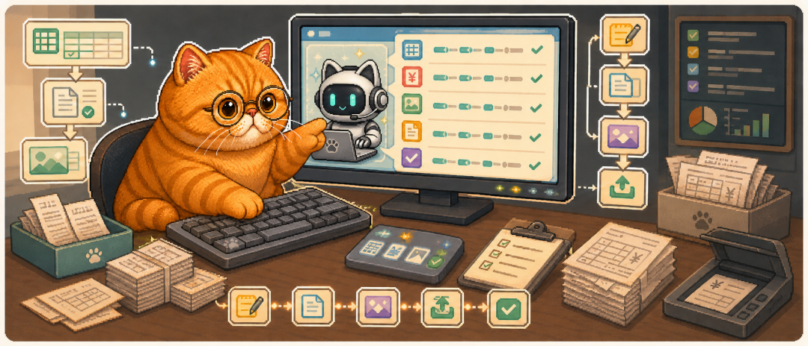
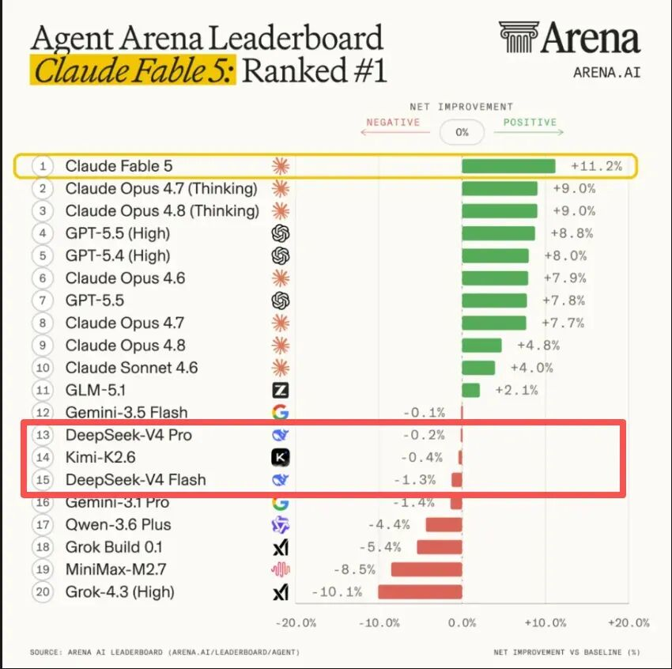
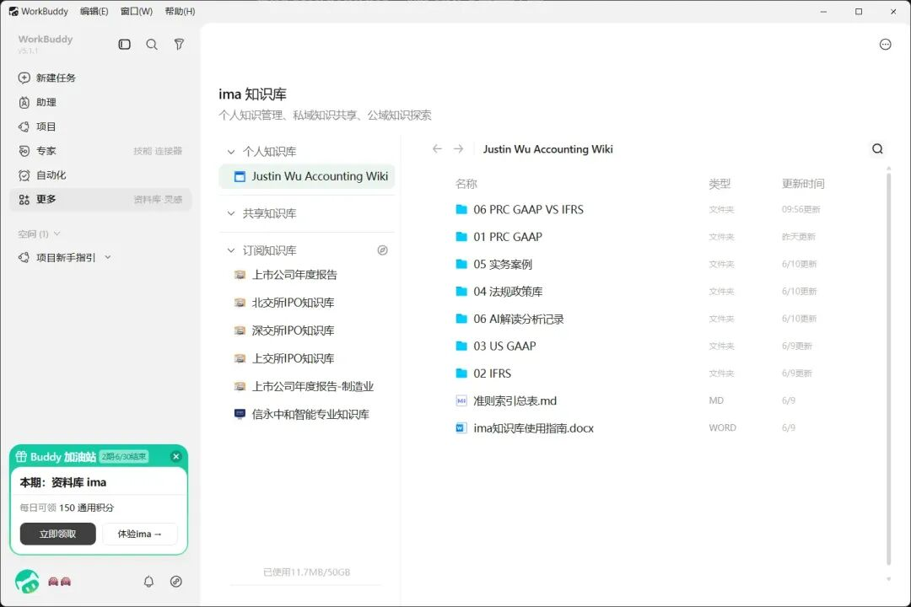
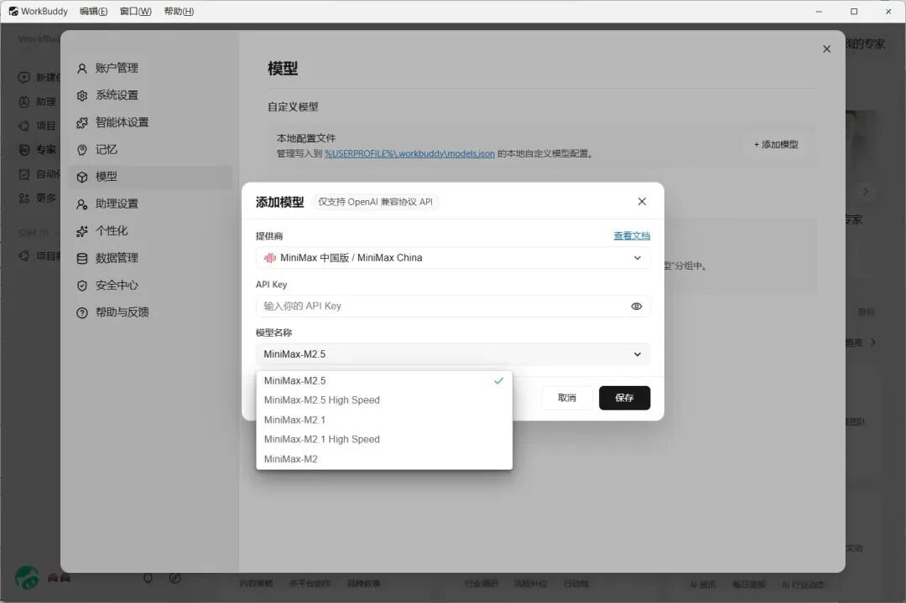
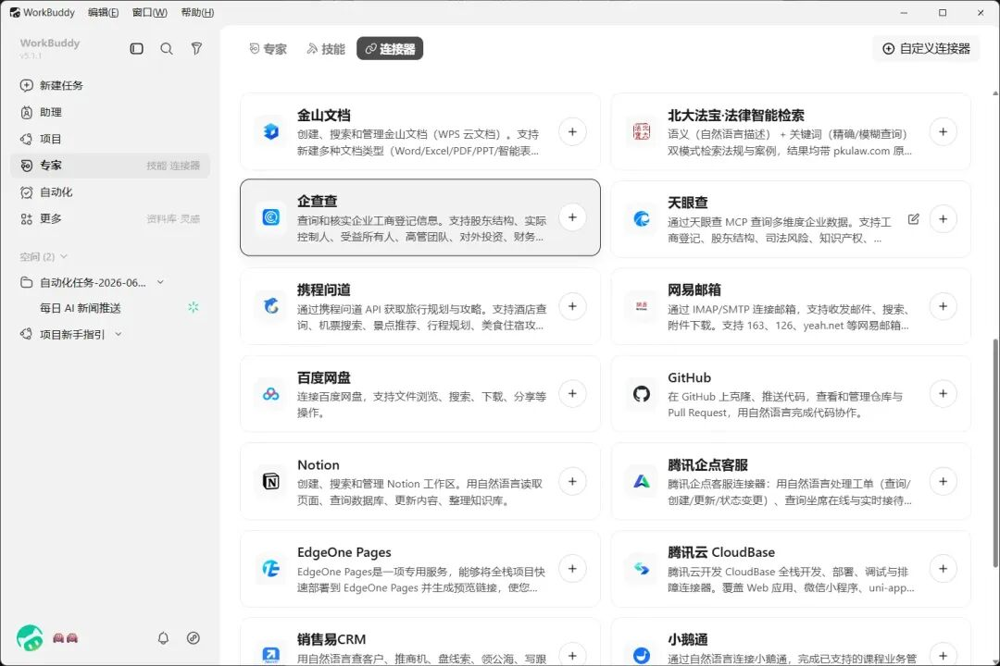
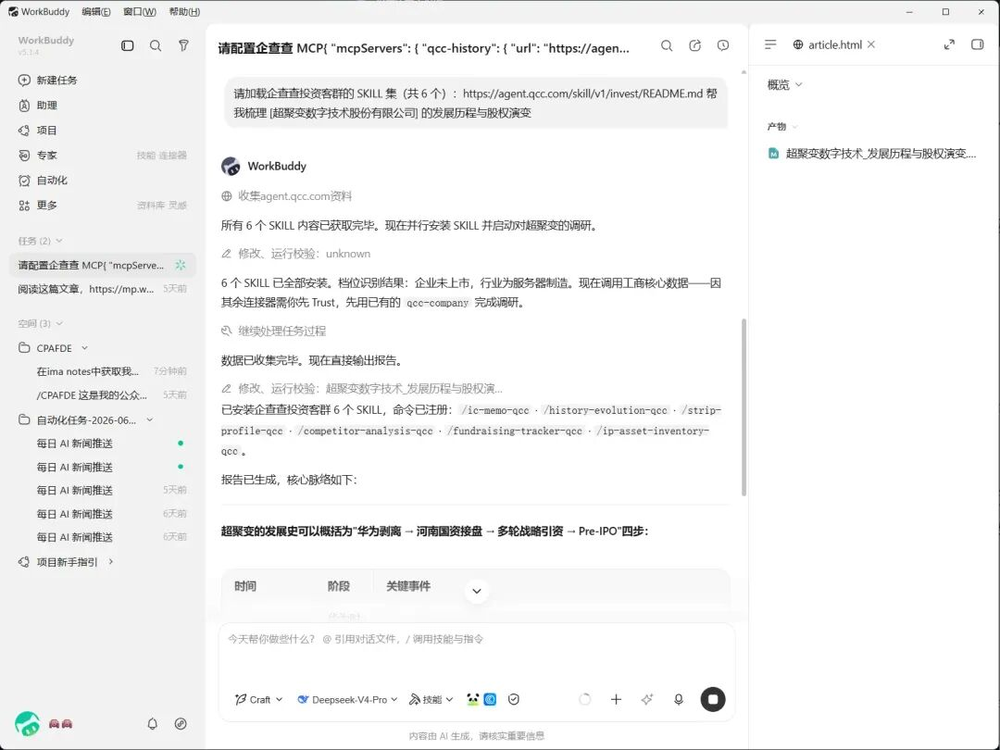
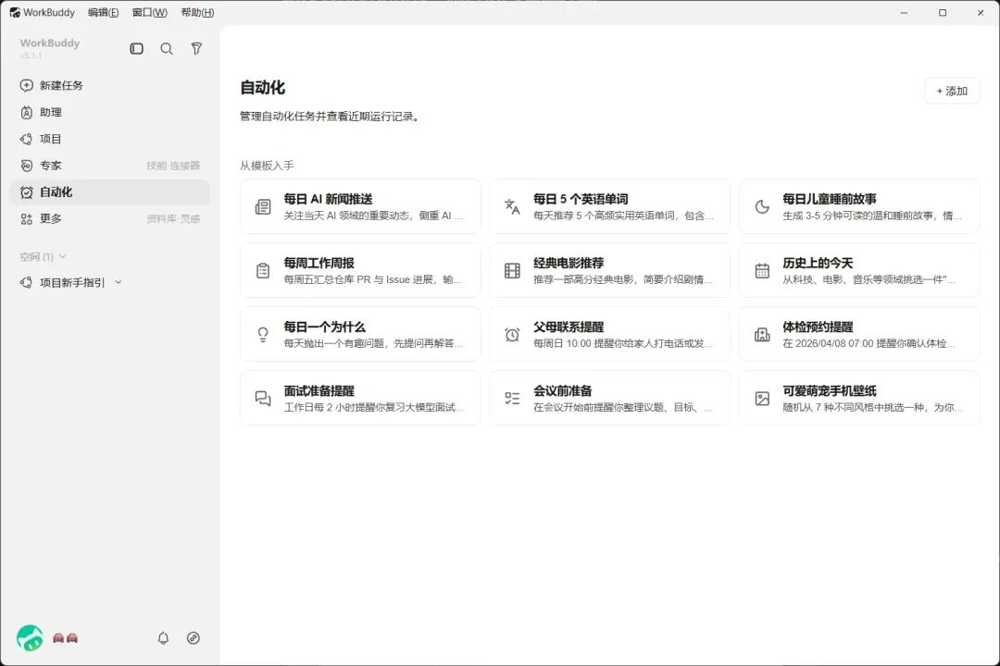
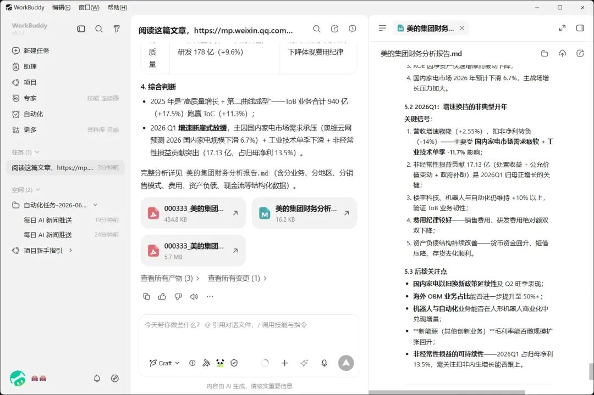
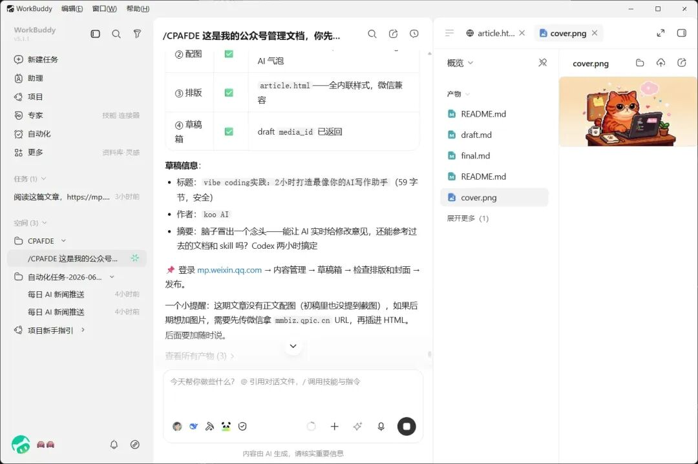

来到 2026 年下半年，作为财务人的你肯定多多少少被 AI 世界的各种新鲜词汇搞蒙圈：什么 Token、Prompt、Agent、龙虾等等，甚至什么 MCP、Skill、Harness 让人摸不着头脑。
AI 工具更是让人望而却步，什么 Coding Plan、Claude Code、Codex 等等看名字一点都不亲民，感觉就是为了程序员和极客准备的，跟日常使用的豆包、千问和元宝根本不是一个东西。
这篇文章就是为了让你打破这个观念——我认为 AI 工具现在已经足够简化、强大，让每一个财务人都能上手试玩。
虽然这篇文章不能让你一次性了解上面的所有概念，但是大概可以帮你理清一个问题：
为什么你觉得 AI 帮助不了你的财务日常工作流？
一、答案：缺一座「桥梁」
豆包、千问等在线聊天机器人（Chatbot）就像是企业外部的税务咨询师——他们几乎熟悉所有的税务法规（训练数据），也有极强的信息收集能力（搜索工具集成），甚至记得你企业的一些情况（上下文）和你的基本喜好（预设提示词）。
但是你经常问完问题会想：要是他能帮我实操，比如填个税盘表就好了。
这就是 Chatbot 的限制：他活在外部，无法很方便地成为你工作流的一部分。
那如果，你能把外部税务咨询「聘」到公司内部呢？
目前市面上的 Agent 类软件（包括 Coding Agent 和各类龙虾、WorkBuddy、Marvis 等等）就是解决这个「聘」的过程。你甚至能「聘」不同大脑（模型）的顾问替你工作，能让他 24×7 连轴转。
所谓大脑（模型）不一样，决定了 Agent 能力的上下限——豆包的是 Seed，千问是 Qwen 3.7。各个模型的能力不一样，我们可以择优选择 Agent 能力强、国内能使用且费用相对合理的 DeepSeek 和 Kimi。

虽然国产模型跟 Claude 系、GPT 系模型有一定差距，但作为一个使用过 Claude Code、Codex、Kimi Code、MiniMax Agent、OpenClaw、Hermes Agent 和 WorkBuddy 的人，我可以负责任地告诉你：
腾讯 WorkBuddy 已经把门槛降低到只要你会用电脑就会用的地步，能力上也能达到国外模型的七八成。
二、为什么是 WorkBuddy？
回到标题——为什么我推荐每一个财务人下载一个 WorkBuddy，而不是其他的 Coding Agent？具体来说，我认为有五个差异：
1. 腾讯生态全面融入，几乎零门槛
一是微信账号扫码登录，省去注册各项 AI API 账号的麻烦；二是自带小程序集成，在微信里面直接 Agent 对话，省去了配置飞书等聊天工具的过程；三是直接连接腾讯 ima 知识库，意味着如果你用过 ima 知识库，可以直接构建「第二大脑」Agent，引用现成的知识库文档、修改增补知识库文件。

（不过后来发现只打通了 knowledge base 模块，notes 模块要通过 Skill 实现，算是一个小痛点。）
2. 全面打通国内模型
WorkBuddy 原生支持腾讯云提供的多个模型，以 credit 计费（目前注册就送 2000+ credits，用比较省的模型基本满足 10+ 个长任务）。
如果你购买过国内 Coding Plan / Token Plan，也可以直接接入，不需要重复付费。不在列表里的模型还支持 OpenAI 协议的自定义——比如我买过 MiniMax 的 Token Plan，按照 MiniMax 文档填入 MiniMax M3 模型名称、API 和地址即可。

3. 丰富的国内网站、应用连接器
比如法律、工商搜索应该是各领域使用较多的软件。连接器支持意味着你能通过 Agent 接入它们，实现自动化查询——比如批量自动查询公司工商信息、法规条文和案例等等。

比如连接了企查查，安装对应的 Skill 和 MCP，可以一句话生成股权历史沿革报告。

4. 极低的试用门槛
WorkBuddy 原生提供了大量的每日任务模板、Skill 和场景专家模板，可以几乎无门槛试用。

5. Agent 任务处理能力不错
测试了几个场景，速度和能力都在线。
例一： 通过 Skill 下载年报并分析。阅读这篇文章，下载安装 Skill，然后帮我下载美的集团 2025 年报和 2026 年一季度报告，做简单的财务分析——包括不同收入来源的变动分析和整体财务情况分析。

例二： 公众号工作流管理（CPAFDE）。这是我的公众号管理文档，你先了解项目结构，后续帮我完成「文章润色 → 生成配图 → 文章排版 → 存到公众号草稿箱」的整个流程。如果过程中需要新增连接器或者技能，告诉我，在我批准后添加。
我尝试通过 WorkBuddy 打通了这条链路：ima 笔记获取文章初稿 → WorkBuddy 润色 → 生成配图 → 排版 → 塞进公众号草稿箱。在 DeepSeek V4 Pro 的模型下，基本功能实现跑通。

三、怎么开始？
很多人觉得 AI 帮助不了财务日常工作流，其实是不知道 AI Agent 的能力，也不知道怎么部署。WorkBuddy 的使用门槛已经低到不存在「部署」的困难。 我建议每一个财务人都开始用起来，探一探现阶段 AI 的能力边界：
1. 先下载用起来，再慢慢挖掘场景。 先试试和 Agent 对话，做一个最简单的功能——比如每日新闻/天气推送助手，甚至是一个 PDF/图片转文字的单一功能 Agent。都能直观地感受到跟 Chatbot 的区别。
2. 思考非工作场景有什么重复性内容。 比如我自己有餐食热量记录的需求，就构建了一个「拍照 → 记录 → AI 估算热量 → 记录飞书表格」的工作流。
3. 试试工作场景。 比如有同事制作了「根据不同出差目的地查询制度规定的出差预算，然后推荐酒店和安排行程」的 Agent，加入到日常工作流中。再比如财务场景下的重复工作整合——Excel 整理（合并、拆分取数等）、报告核对、数据查询……
4. 遇到不懂的或者解决不了的，不需要查百度，直接把问题丢给 AI，让它一步一步解决。
四、两个结论
- WorkBuddy 给我的直观感受是 主攻非编程场景，且极力尝试往非代码人员推广。我自己体验来看，它是国内使用 AI Agent 一个很好的起点——极低的门槛和活动奖励能让很多人快速上手。
- 和 Codex 等国外 Agent 工具的差异主要在于 生态和模型。WorkBuddy 在融入国内软件生态上相比 Codex 等有得天独厚的优势，其次才是模型能力的差异。
WorkBuddy 官方下载链接： https://www.codebuddy.cn/work/
如果你已经用上了 WorkBuddy 或者还在观望，欢迎留言聊聊——你用它尝试过什么场景？或者你理想中的「财务 AI 助手」长什么样？